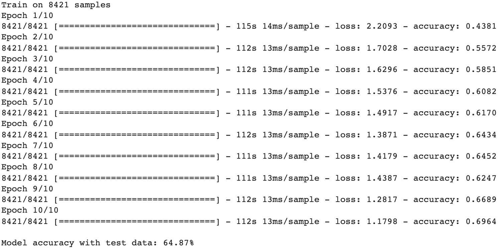

About...
Greetings! I'm an insightful and goal-focused engineer with 20 years of experience in the semiconductor and healthcare industries. I have a passion for leveraging information technology to build data driven solutions at scale.
I'm a recent graduate of Coding Dojo, a coding school that teaches full stack web development. I also have a certificate in data science from the University of Washington. The intersection of data science and society fascinates me!
Outside of work you'll likely find me on my bicycle. You'll also likely find 80s music on my playlists!
Bistro 404 Waitlist
Waitlist is an table waitlist website for restaurants. The site replaces paper and pen waitlists. A customer can scan a QR code or visit the site directly to add themselves to the restaurant waitlist. Staff can notify customers when a table is ready via Twilio SMS.
Technologies:
SeeFood Quickly
SeeFood Quickly is a restaurant web site where customers can order food and then checkout with a credit card. Checkout is done through Stripe payment gateway and customers are notified of their order status via Twilio SMS.
Technologies:
Manufacturing Yield Classifier
This project explores the secom dataset hosted by UC Irvine's machine learning repository. The project imports the dataset, performs exploratory analysis, cleans and prepares the data, builds predictive binary classifier models that predict yield loss. Finally, the project compares results from various models and make recommendations on how best to leverage sensor data to reduce mean time to detect yield loss.
Technologies:
RFM with K-Means
This project imports a publically available e-commerce data set and performs Recency, Frequency and Money analysis on sales transactions. The RFM results are fed into K-means clustering as a way of clustering similar customers together. The intended audience for such analysis are sales and marketing teams so that customer campaigns can be targeted appropriately. For example, frequent but non-recent customers may be loyal customers who are churning so incentive campaigns may help bring these customers back.
Technologies:
NLP Classifier
This project explores Natural Language Processing using recurrent neural networks. The dataset used is the Keras Reuters newswires dataset. This dataset contains 11,228 Reuters newswires, each classified as one of 46 topics. In this project I train and test various RNN/LSTM models to recognize newswire topics using sequences of words.
Technologies:
Image Classifier
This project trains various ML models to classify objects in the Keras CIFAR-10 image dataset. The dataset consists of 60,000 images in 10 classes. Google TensorFlow and Keras are used to build convolutional neural networks. Several models are built with each model progressively using hyperparameters that improve image classification accuracy.